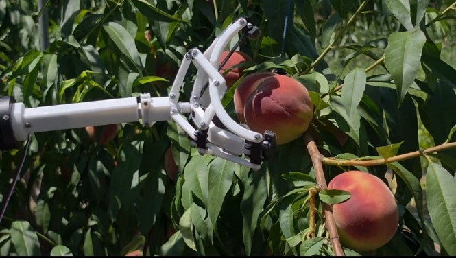
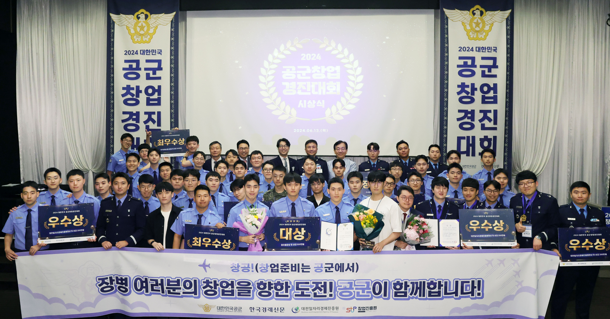
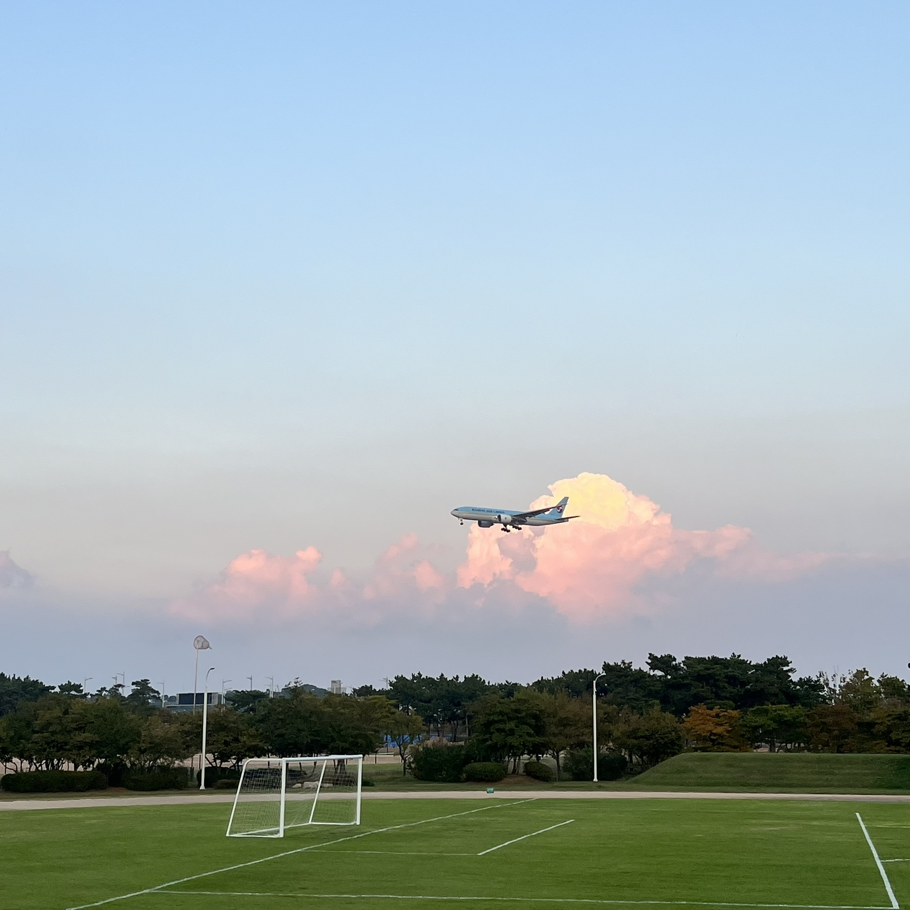
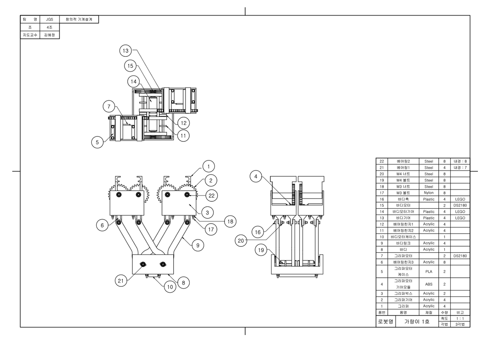
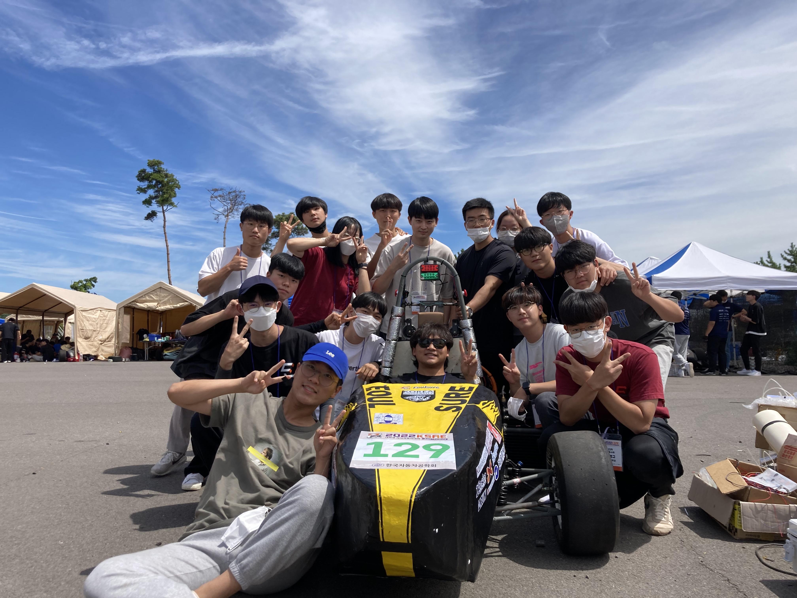
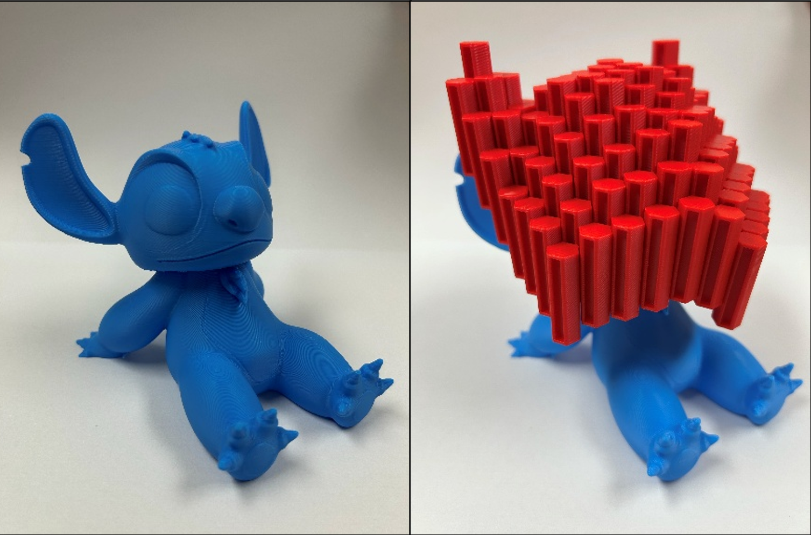
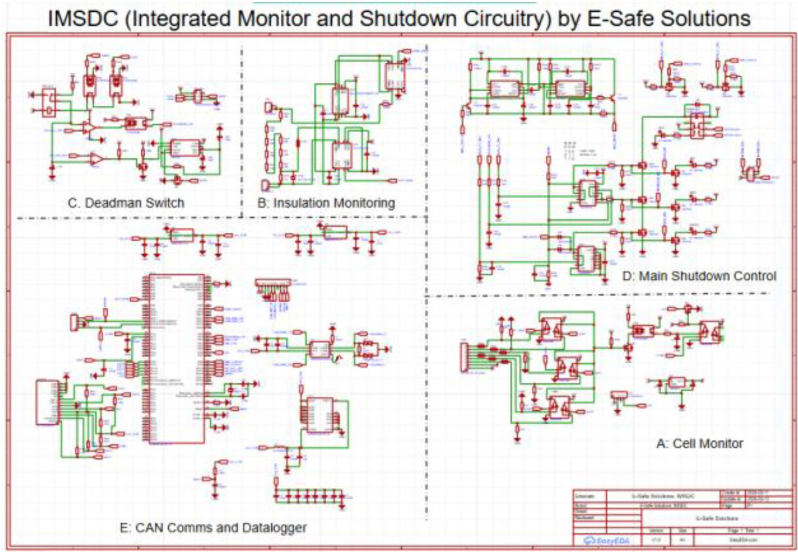

Mechanical Engineering Portfolio · Seoul, KR
Ryan Minkyu Chung
Mechanical Engineering student at Korea University, building thoughtful machines and systems.
Research interests — Compliant Mechanisms · Deployable Structures · Robotic Manipulation
Mechanical Engineering Portfolio · Seoul, KR
Mechanical Engineering student at Korea University, building thoughtful machines and systems.
Research interests — Compliant Mechanisms · Deployable Structures · Robotic Manipulation

PublicationR. M. Chung et al., “A parametrically scalable compliant gripper for fruit harvesting: Mold-free additive manufacturing with reduced material and process waste” — IJ-PEMGT, UNDER REVIEW, 2026. Preprint
Seven-semester early graduation — prospective graduate student in mechanical/aerospace engineering.
Data-driven Machine Design Lab at Korea University (Prof. Dahyun Daniel Lim).
Conducting independent research on deployable structures as well as nationally funded projects (Self-Driven Labs).
Mandatory service at Incheon International Airport.
Chassis fabrication on the 2022 car, then battery box, wiring, and HV / LV PCB design for the 2023 E-Formula racecar.
Began my journey in Mechanical Engineering










| No. | Category | Instruments | Ref. |
|---|---|---|---|
| 01 | CAD | CATIA · Siemens NX · PTC Creo · SolidWorks · Fusion 360 | CSWA certified |
| 02 | Electronics | PCB Design (EasyEDA) · Soldering · Arduino | Formula HV / LV systems |
| 03 | Fabrication | 3D Printing · Laser Cutting · Welding & Power Tools | Eoulsure chassis & parts |
| 04 | Software | C++ · MATLAB · HTML / CSS · COMSOL | Brachiating robot · this site |
| 05 | Languages | English–Korean Translation & Interpretation · Bilingual | IELTS 8.5 · TOEIC 990 |
| 06 | Miscellaneous | Microsoft Excel · Microsoft PowerPoint | Powertrain calcs · MLO |